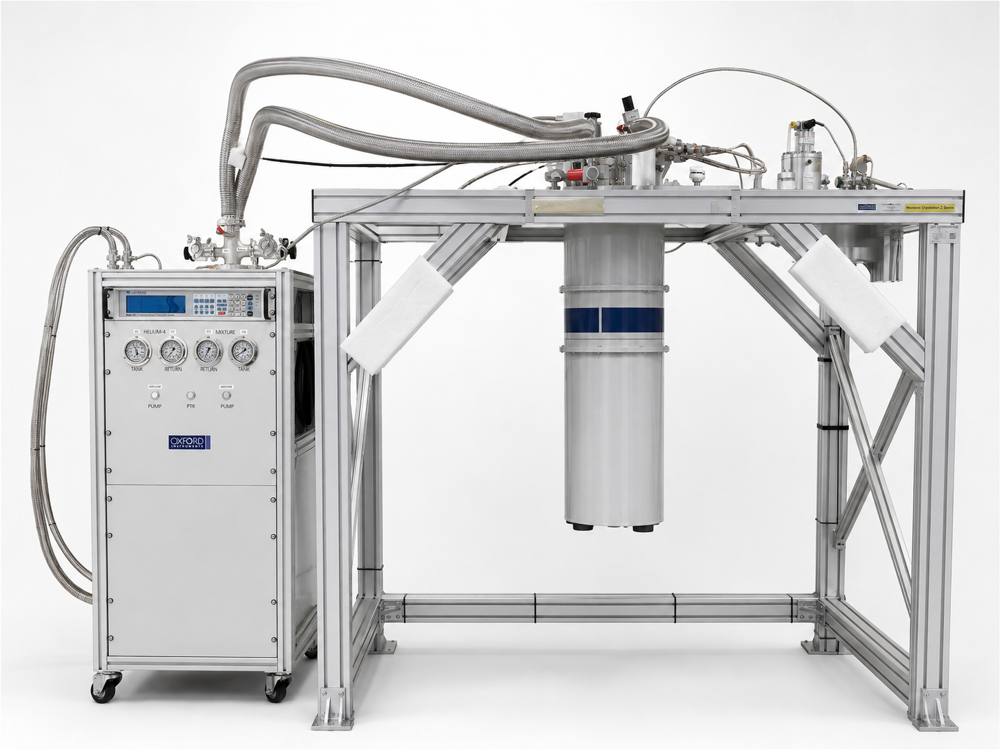
Facilities
Experimental tools for quantum-device research.
QDL combines in-lab equipment for low-temperature experiments and device characterization with shared fabrication and analysis facilities.
QDL Equipment
In-lab equipment
Core equipment operated directly within the Quantum Device Lab.
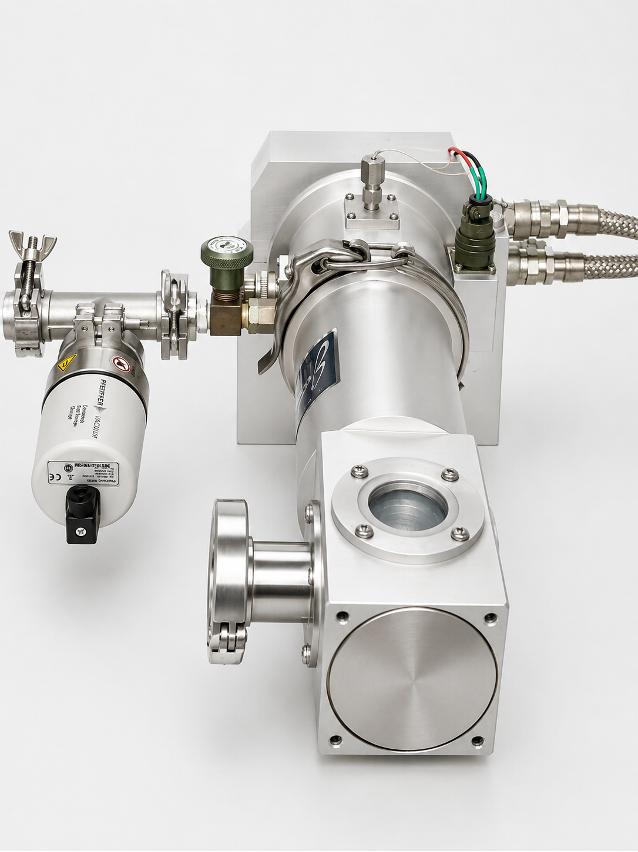
4K Cryocooler
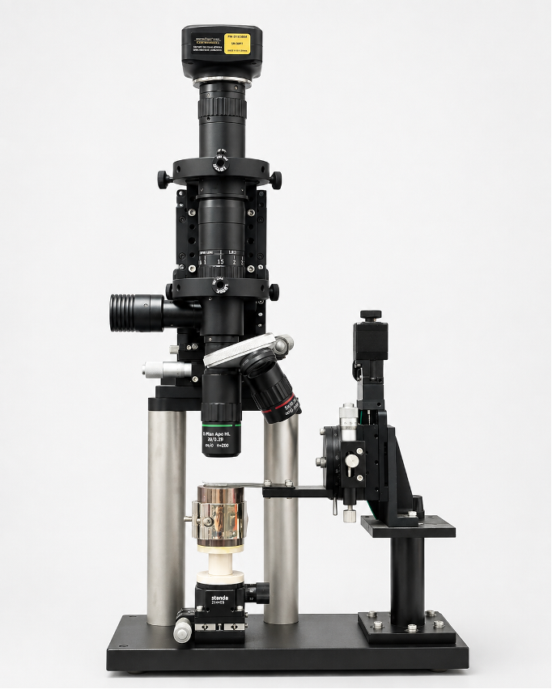
2D Transfer Station
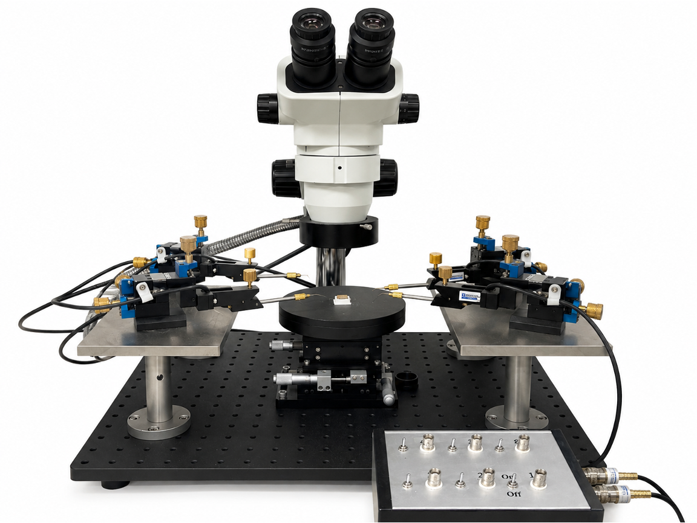
Probe Station
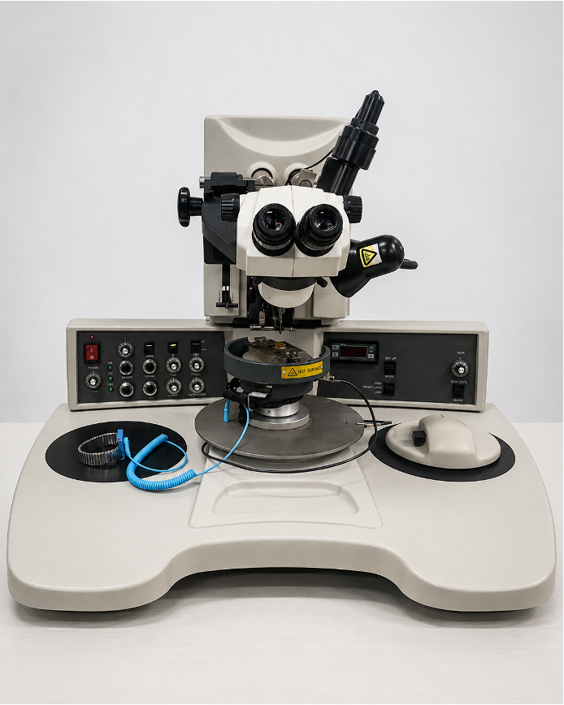
Wedge Wire Bonder
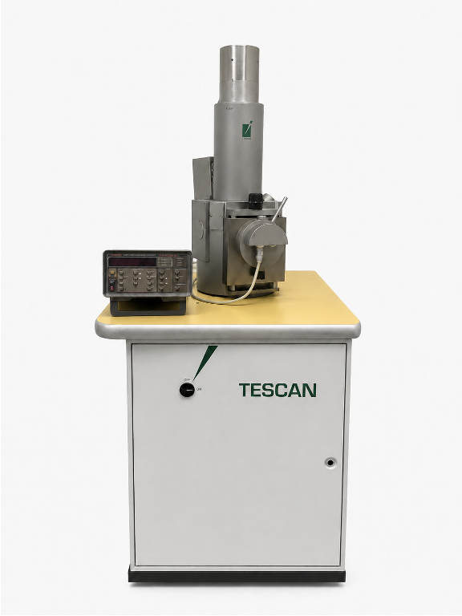
Scanning Electron Microscope (SEM)
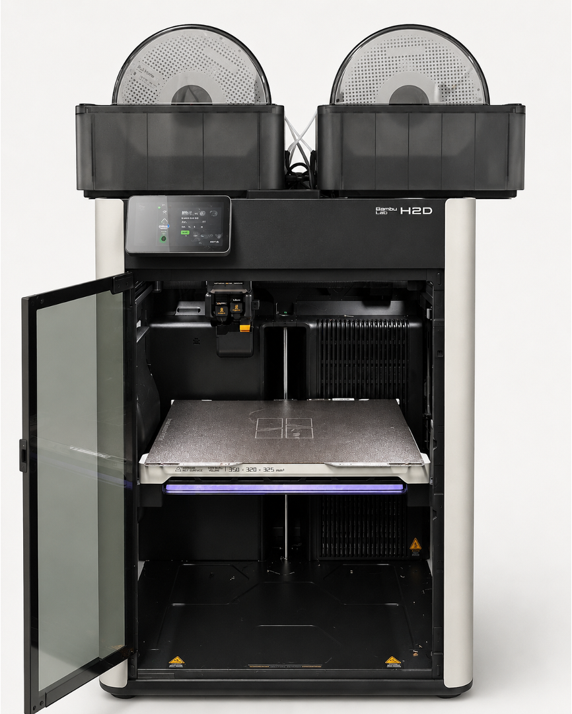
3D Printer
Shared Facilities
Shared fabrication & characterization tools
Additional equipment available through shared facilities at Jeonbuk National University.
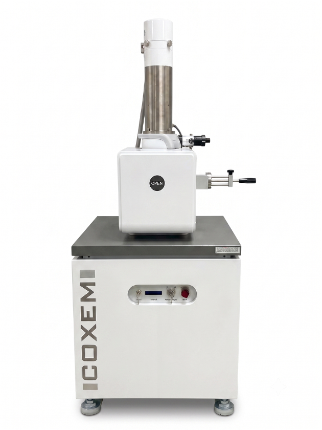
Scanning Electron Microscope (SEM)
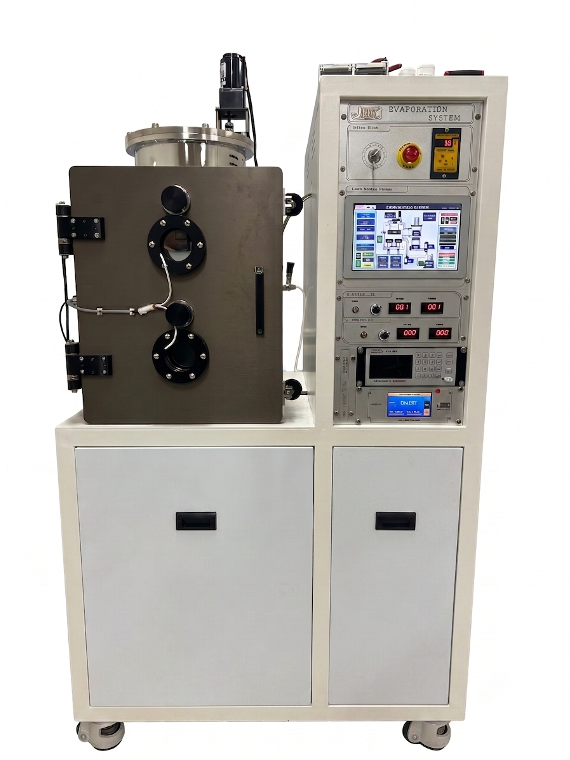
Thermal Evaporator
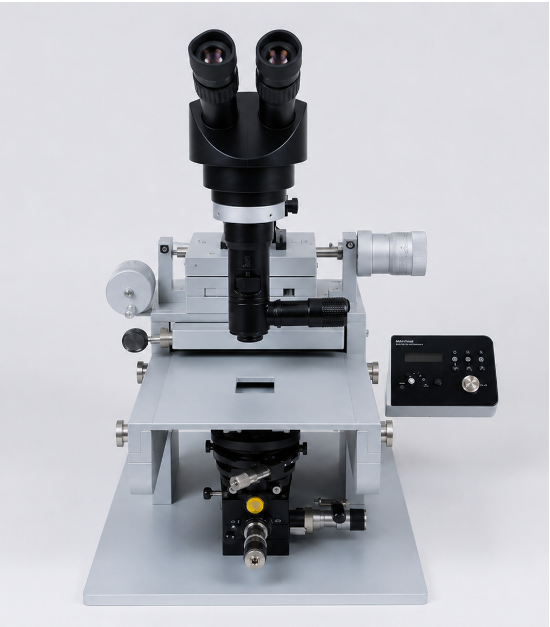
Mask Aligner 1
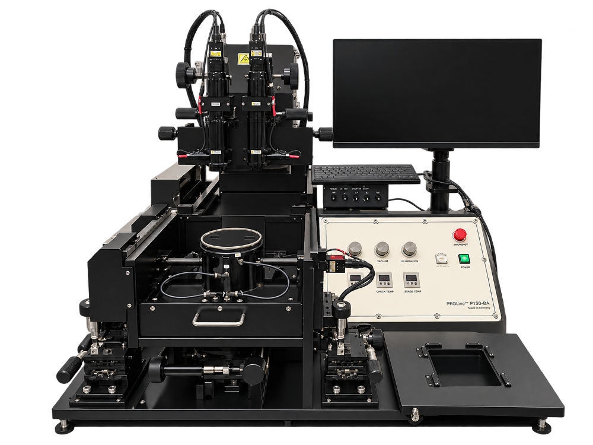
Mask Aligner 2

Stylus Profilometer

Plasma Cleaner
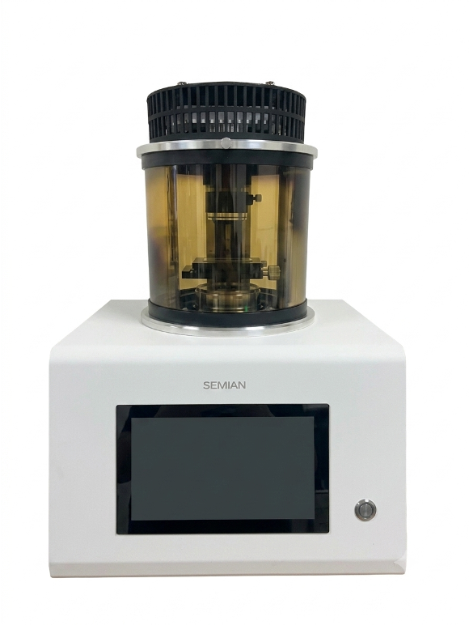
Sputtering System
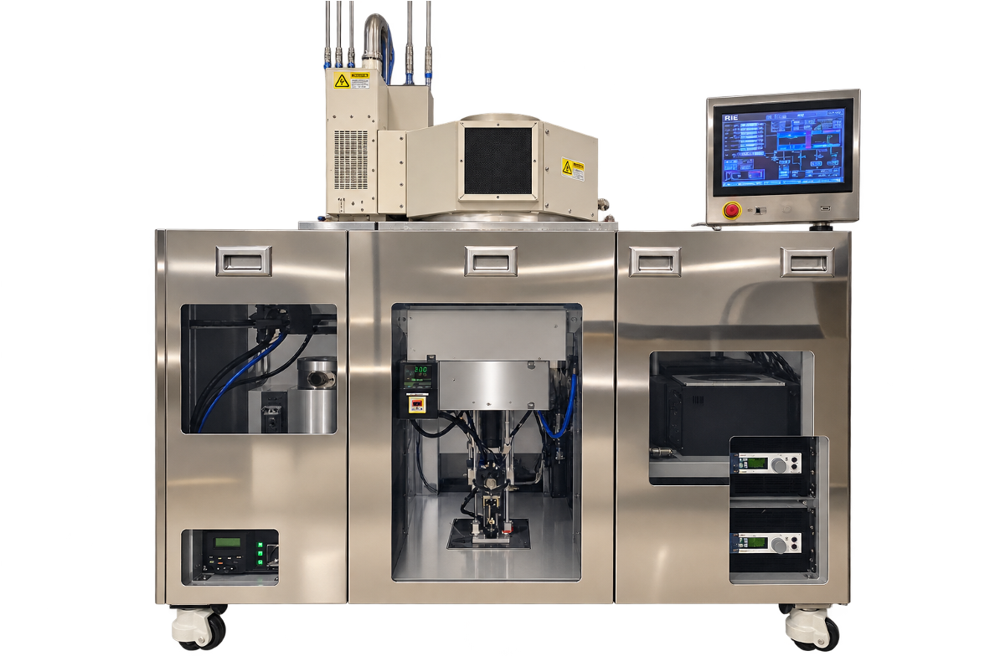
ICP RIE
Each equipment image is displayed individually with its original aspect ratio preserved.